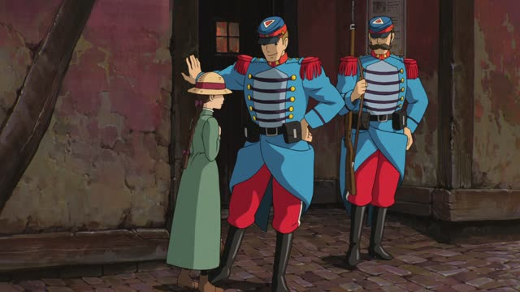
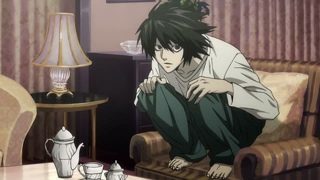
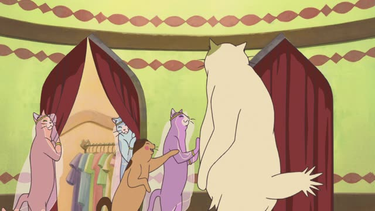
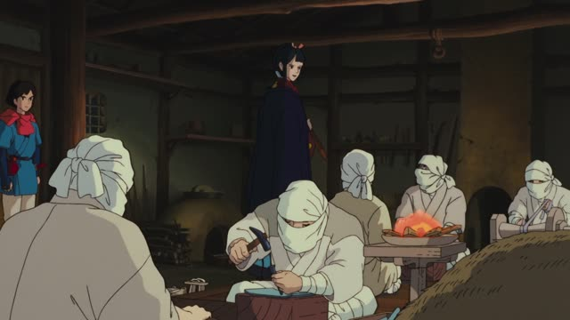

など

Howl's Moving Castle
ではお茶などいかがでしょう？
"Then how about some tea or something?"
など goes right after a noun and means "and so on, things like that": what you name is only an example, and there's more.
It often closes a list with や (A や B など). After one noun alone it means "X or something like that", which makes an offer softer.
On this card, a soldier offers Sophie tea as one idea, not the only one. など itself never changes: politeness comes from the end of the sentence. It's the neutral word, fine in speech and writing; とか means the same but is casual and spoken.
Sakamoto Days · Episode 7
銃やナイフなどは、もう古い。
"Guns, knives and the like are old news."
On this card, the classic A や B など: guns and knives stand for all the old weapons.
Quick Examples
A coworker asks what you usually eat for lunch.
ラーメンやうどんなどを食べます。
"Ramen, udon, that kind of thing."
PoliteYou need to write something down.
ペンや紙など、書くものはありますか？
"Do you have anything to write with, like a pen or paper?"
PoliteA friend asks where you want to go in Japan.
京都や奈良などに行きたい。
"I want to go to places like Kyoto and Nara."
The particle comes after など: などに, などを, などは.
CasualWith and without
ラーメンとうどんを食べます。
"I eat ramen and udon." Those two, that's the whole list.
ラーメンやうどんなどを食べます。
"I eat ramen, udon, that kind of thing." Just examples, there's more.
Examples from Media
Goblin Slayer · Episode 1
薬などは持っていらっしゃるのですか？
"Do you have medicine or anything like that?"
One noun + など: medicine is the example, any supplies would do.

Death Note · Episode 6
メモなどは一切取らずに、頭の中に入れてください。
"Don't take notes or anything, keep it all in your head."

The Cat Returns
あちらに甘いものなど用意しておりますにゃ。
"We've prepared sweets and such over there, meow."
The Way of the Househusband · Episode 5
リブなどを付けて、少しおしゃれに仕上げてます！
"I added ribbing and things, to make it a little stylish!"
Kotaro Lives Alone · Episode 9
幼稚園の送り迎えや買い物など。
"[We're together for] taking me to kindergarten, shopping, things like that."
Oishinbo · Episode 3
保冷車や保冷庫など、完璧な輸送システムを持っておる。
"We have a perfect delivery system: refrigerated trucks, cold storage and so on."

Princess Mononoke
急がせてすまぬな。あとで酒など届けよう。
"Sorry for rushing you. I'll send over some sake or something later."
Dungeon Meshi · Episode 13
調味料などの一部食材も、あとわずかでな。
"Some of our food, like the seasonings, is running low too."
など + の before a noun: "seasonings-and-such food".